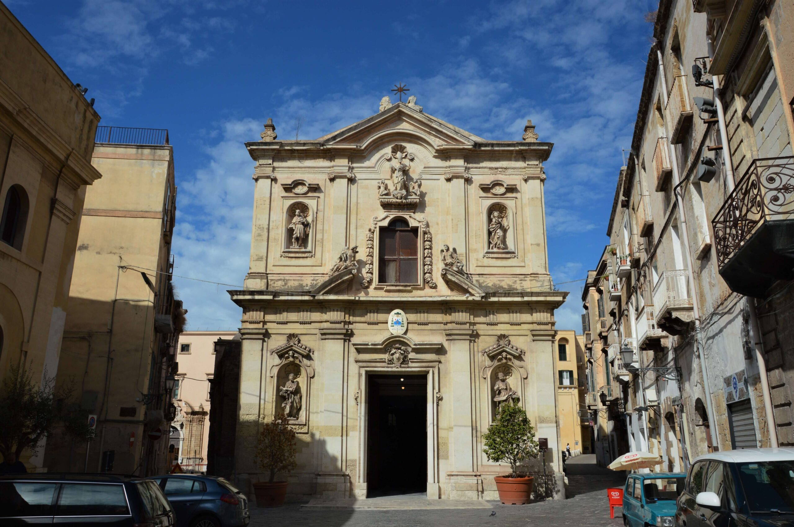

La chiesa di Maria Santissima del Monte Carmelo (comunemente detta chiesa del Carmine) di Taranto è una delle chiese del Borgo Umbertino della città. La sua esistenza si attesta fin dal 1577, ma nel corso dei secoli è stata rimaneggiata più volte fino ad assumere l’attuale aspetto neoclassico

Torre dell'orologio
La Torre dell'Orologio di Taranto è uno dei monumenti del Borgo Antico della città. Fu costruito nella seconda metà del Settecento nella forma originaria, cioè senza il corpo poligonale avanzato e la cuspide campanaria aggiunti più tardi.
Cattedrale di San Cataldo
La cattedrale di San Cataldo (o duomo di San Cataldo) è la cattedrale della arcidiocesi di Taranto ed è la più antica cattedrale romanica pugliese. Inizialmente dedicata a Santa Maria Maddalena poi a San Cataldo Vescovo.